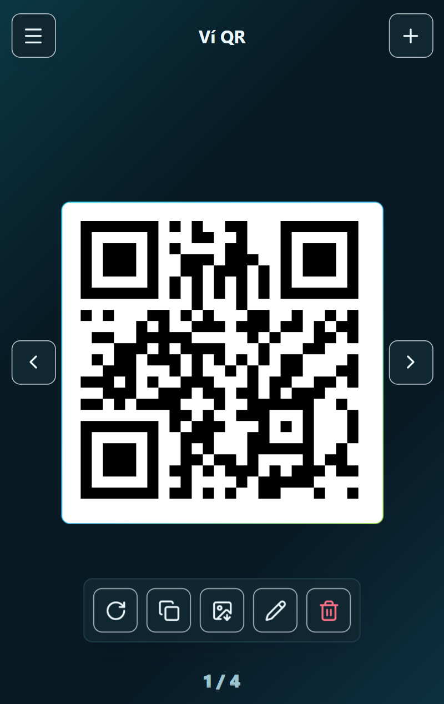

Ảnh cần dùng khó tìm
QR, ảnh giấy tờ và ảnh cần dùng nhanh dễ lẫn với ảnh chụp, ảnh tải về và ảnh màn hình khác.
Ví QR và ảnh cá nhân
Lưu QR ngân hàng, Wi-Fi, liên hệ, nhóm chat hoặc ảnh cần mở nhanh như căn cước, giấy phép lái xe, thẻ thành viên. Mở trang là thấy ngay, vuốt qua lại, phóng rõ khi cần và không cần tài khoản.

Vấn đề
QR, ảnh giấy tờ và ảnh cần dùng nhanh dễ lẫn với ảnh chụp, ảnh tải về và ảnh màn hình khác.
Mỗi lần cần nhận tiền, chia sẻ Wi-Fi hoặc gửi liên hệ lại phải mở đúng app và đúng màn hình.
Các mã dùng lặp lại nên có sẵn trên thiết bị, không phụ thuộc máy chủ hay tài khoản.
Bảo mật dữ liệu
Ví QR không yêu cầu đăng nhập và không có máy chủ riêng để nhận QR hoặc ảnh bạn lưu. Danh sách được giữ trong trình duyệt trên thiết bị đang dùng. Khi xuất file sao lưu, nội dung file được khóa bằng mật khẩu bạn nhập.
QR và ảnh không tự gửi lên máy chủ của ứng dụng. Dữ liệu gắn với trình duyệt và thiết bị bạn đang dùng.
File xuất cần đúng mật khẩu để mở lại khi nhập dữ liệu. Nếu quên mật khẩu, ứng dụng không thể khôi phục file đó.
Xóa dữ liệu trình duyệt hoặc đổi thiết bị có thể làm mất QR và ảnh nếu chưa xuất file sao lưu.
Chức năng
Tạo QR từ nội dung văn bản, URL, số điện thoại, email, vCard, Wi-Fi hoặc link ảnh QR.
Đưa ảnh từ thiết bị vào Ví QR, gồm ảnh QR, căn cước, giấy phép lái xe, thẻ thành viên hoặc ảnh cần mở nhanh.
Màn hình tập trung vào từng QR hoặc ảnh, có nút điều hướng, phím mũi tên và thao tác vuốt trên di động.
Xuất từng QR hoặc ảnh đã lưu để gửi nhanh qua tin nhắn hoặc lưu lại khi cần.
Chọn nhanh các theme sáng, tối, ocean, mint, rose, forest, graphite, aurora và nhiều màu khác.
Sao lưu hoặc chuyển thiết bị bằng file được bảo vệ bằng mật khẩu, sau đó nhập lại khi cần.
Hình ảnh thực tế
FAQ
Dữ liệu được lưu trong trình duyệt trên thiết bị bạn đang dùng. Nếu đổi trình duyệt hoặc đổi máy, bạn cần xuất file sao lưu rồi nhập lại.
Không. Ứng dụng không có tài khoản đăng nhập và không có máy chủ riêng để nhận danh sách QR hoặc ảnh của bạn.
Có. Khi xuất dữ liệu, bạn cần đặt mật khẩu cho file sao lưu. Người khác cần đúng mật khẩu đó mới nhập lại được nội dung.
Ứng dụng không thể lấy lại mật khẩu và không thể mở file sao lưu nếu bạn quên mật khẩu đã đặt.
Có thể có. Nếu bạn xóa dữ liệu trang web trong trình duyệt trước khi xuất file sao lưu, danh sách QR và ảnh có thể mất khỏi thiết bị đó.
Có thể lưu nếu bạn cần mở nhanh, nhưng đây là giấy tờ nhạy cảm. Hãy đặt khóa màn hình cho thiết bị và xuất file sao lưu với mật khẩu mạnh.